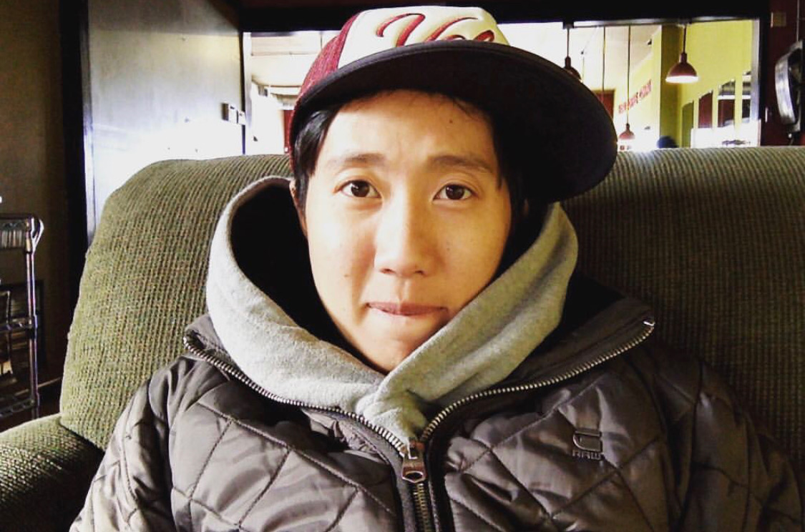

"Aside from school and work, I have a strong passion about Coffee. This passion started about 6 years ago when I met one good friend of mine. Her life was all about coffee shop. Then I tried several places and fallen in love with the hobby.
#KRANCOFFEEHOP is the hashtag I created to map all places I went. Let's take a look of my favorite top 6 in the US on the Portfolio page."